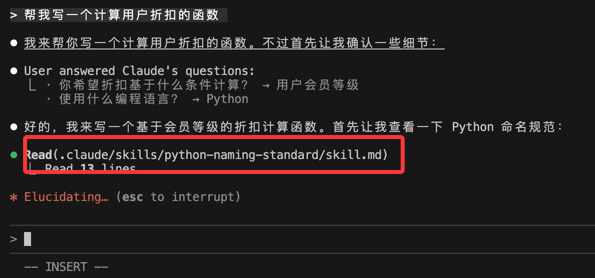
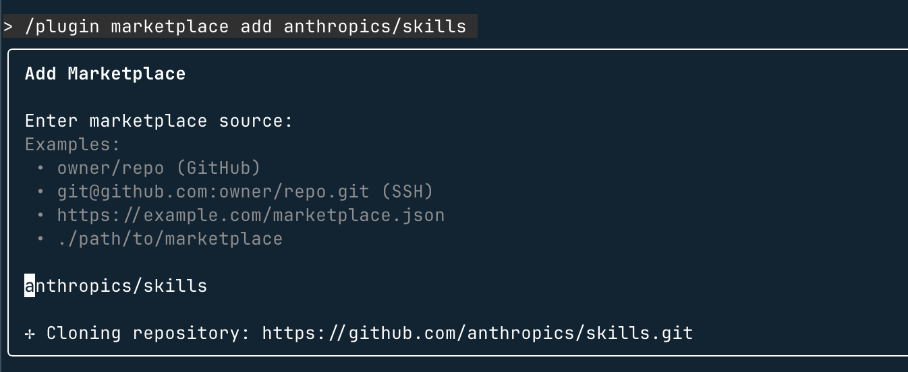
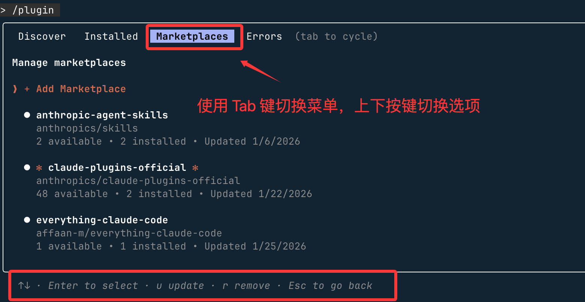
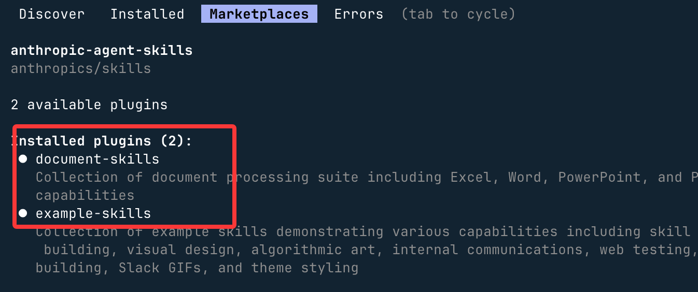
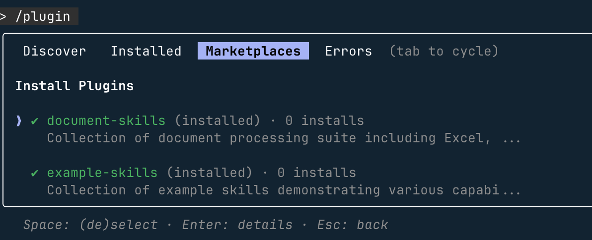
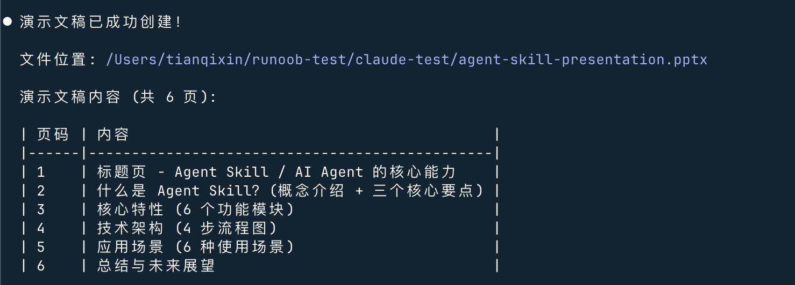

Primer Skill
Olvidémonos por ahora del complejo proceso de creación, comencemos primero conusar un Skill ya existentey sintamos la comodidad que nos aporta.
La demostración de este artículo se basa en Claude Code. Si aún no lo has instalado, puedes consultar nuestroTutorial de Claude Code。
Crear el directorio del Skill
Los Skills se guardan en~/.claude/skills/(global personal) o en el directorio del proyecto bajo.claude/skills/(exclusivo del proyecto).
En esta sección probaremos en el directorio del proyecto. Primero crea un directorio claude-test:
mkdir claude-test
Entra en ese directorio y crea el directorio y los archivos de skills:
mkdir -p .claude/skills/python-naming-standard
Escribir el archivo de configuración SKILL.md
Crea SKILL.md en el directorio. Este es el cerebro del Skill, que le indica a Claude cuándo usarlo.
--- name: Python 内部命名规范技能 description: 当用户要求重构、审查或编写 Python 代码时，请参考此规范。 --- ## 指令 1. 所有的内部辅助函数必须以 `_internal_` 前缀命名。 2. 如果发现不符合此规则的代码，请自动提出修改建议。 3. 在执行 `claude commit` 前，必须检查此规范。 ## 参考示例 - 正确：`def _internal_calculate_risk():` - 错误：`def _calculate_risk():`
Requisitos de los campos:
- name: debe usar únicamente letras minúsculas, números y guiones (máximo 64 caracteres)
- description: descripción breve del Skill y cuándo usarlo (máximo 1024 caracteres)
Después de crearlo, la estructura de archivos es la siguiente:

Tu proyecto ahora debería verse así:
my-project/ ├─ src/ │ └─ test.py # 项目源码 ├─ .claude/ │ ├─ skills/ │ │ └─ hello-world/ │ │ ├─ skill.md # Skill 定义（YAML + Instructions，机器可执行） │ │ └─ README.md # Skill 说明（人类阅读，可选） │ └─ config.yml # Claude 项目级配置（可选） ├─ .gitignore └─ README.md # 项目整体说明
A continuación, ejecuta el siguiente comando en la terminal para iniciar Claude Code:
claude
Introduce la tarea:
Ayúdame a escribir una función para calcular el descuento del usuario.
Claude escaneará los Skills instalados, detectará que tu solicitud involucra "escritura de código Python" y la hará coincidir con python-naming-standard.

Según los requisitos de SKILL.md, generará el siguiente código:
def _internal_get_discount(user_score):
# 计算逻辑...
return discount
Agregar archivos de recursos (opcional)
Además, podemos.claude/skills/agregar los siguientes directorios bajo:
En la misma carpeta, agrega:
examples/: almacena archivos de ejemplo.references/: almacena documentos de referencia.scripts/: almacena scripts ejecutables (por ejemplo, Python para procesar PDF).
Luego, haz referencia a ellos en SKILL.md:
查看示例 commit：./examples/good-commit.txt 运行脚本：使用工具执行 ./scripts/process.py
Mercado oficial
Además de crearlos tú mismo, también puedes aprovechar el estándar abierto Agent Skills publicado a finales de 2025:
- Mercado oficial: visitahttps://github.com/anthropics/skillsel repositorio para descargar habilidades predefinidas (como: optimizador de React, herramienta de ajuste de SQL).
- Skill Creator: puedes decirle a Claude: "Ayúdame a resumir en un Skill la lógica de configuración de Docker que te acabo de enseñar", y automáticamente generará los archivos por ti en el directorio correspondiente.
Podemos registrar este repositorio como mercado de complementos de Claude Code; solo necesitas ejecutar el siguiente comando en Claude Code:
/plugin marketplace add anthropics/skills

Luego puedes usar/plugin para ver:

Pasos para instalar un conjunto de habilidades específico:
- Explorar e instalar complementos (Browse and install plugins)
-
Selecciona la fuente de complementos anthropic-agent-skills
Selecciona document-skills (habilidades de documentos) o example-skills (habilidades de ejemplo)

-
Haz clic en Instalar ahora (Install now)

También podemos instalar directamente los dos tipos de complementos anteriores mediante comandos:
/plugin install document-skills@anthropic-agent-skills /plugin install example-skills@anthropic-agent-skills
Nota:El directorio de skills instalados mediante complementos se encuentra en～/claude/plugins/marketplaces/bajo.
Una vez que la instalación del complemento haya finalizado, es necesario reiniciar Claude Code.
Al usarlo, solo necesitas mencionar el nombre de la habilidad en la instrucción para invocarla. Por ejemplo, después de instalar el complemento document-skills, puedes darle la siguiente instrucción a Claude Code:
使用 PDF 技能提取 path/to/some-file.pdf 文件中的表单字段
O crear un PPT:
创建一个 Agent Skill 的演示文稿
Se puede ver que se ha invocado/document-skills:pptx：

comenzando a generar:


Otras extensiones